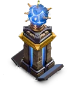
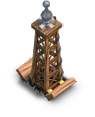
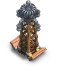
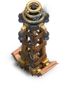
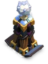
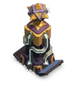
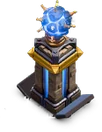

Hidden Tesla — Clash of Clans
Updated: 26 August 2026 · By the Goblins Farm team
The Hidden Tesla stays concealed until an attacker comes close or the base takes enough damage, then appears and attacks air and ground. Its value is the surprise: attack plans are made from a scouting screen that does not show it.
- Levels
- 17
- Size
- 2x2
- Category
- Defense
- Damage per second
- 34
- Targets
- Ground and air
- Range
- 7 tiles
- Unlocked at
- Town Hall 7
- Most you can place
- 5
- Role
- Concealed defence, air and ground
What it does
Remains hidden during scouting and reveals itself once an attacker gets close enough or the base is sufficiently damaged. It then fires at air or ground targets with strong single-target damage.
Because attackers plan from what they can see, a Tesla in an unexpected place invalidates the plan rather than merely adding damage.
Placement
- Put them where a plan would assume safety, such as a compartment that looks empty on the scouting screen.
- Near your storages and Town Hall, so a Goblin or hero push that expected a clean run does not get one.
- Do not cluster them. Two Teslas together are one surprise; two apart are two.
 How it looks at each level
How it looks at each level






Stats by level
| Level | Hitpoints | DPS or effect | Build cost | Build time | Town Hall |
|---|---|---|---|---|---|
| 1 | 600 | 34 DPS | 250,000 Gold | 2 h | 7 |
| 2 | 630 | 40 DPS | 350,000 Gold | 3 h | 7 |
| 3 | 660 | 48 DPS | 500,000 Gold | 4 h | 7 |
| 4 | 690 | 55 DPS | 600,000 Gold | 6 h | 8 |
| 5 | 730 | 64 DPS | 800,000 Gold | 12 h | 8 |
| 6 | 770 | 75 DPS | 1,200,000 Gold | 1 d | 8 |
| 7 | 810 | 87 DPS | 1,400,000 Gold | 1 d 6 h | 9 |
| 8 | 850 | 99 DPS | 1,600,000 Gold | 1 d 12 h | 10 |
| 9 | 900 | 110 DPS | 2,100,000 Gold | 1 d 18 h | 11 |
| 10 | 980 | 120 DPS | 3,000,000 Gold | 2 d | 12 |
| 11 | 1,100 | 130 DPS | 3,100,000 Gold | 2 d 12 h | 13 |
| 12 | 1,200 | 140 DPS | 3,700,000 Gold | 3 d | 13 |
| 13 | 1,350 | 150 DPS | 5,100,000 Gold | 3 d 12 h | 14 |
| 14 | 1,450 | 160 DPS | 6,500,000 Gold | 4 d | 15 |
| 15 | 1,550 | 170 DPS | 8,200,000 Gold | 5 d | 16 |
| 16 | 1,650 | 180 DPS | 15,000,000 Gold | 7 d | 17 |
| 17 | 1,750 | 190 DPS | 25,000,000 Gold | 13 d | 18 |
| Town Hall | Available |
|---|---|
| TH7 | 2 |
| TH8 | 3 |
| TH9 | 4 |
| TH10 | 4 |
| TH11 | 4 |
| TH12 | 5 |
| TH13 | 5 |
| TH14 | 5 |
| TH15 | 5 |
| TH16 | 5 |
| TH17 | 5 |
| TH18 | 5 |

Where these numbers come from. Read from Clash of Clans' own game files, client build 18.400.21. They are exact for that build and do not reflect anything released after it, so verify in game before committing an upgrade.
Game values are read from Supercell's own game files, reproduced as fan content under Supercell's Fan Content Policy. Goblins Farm is not affiliated with, endorsed, sponsored, or specifically approved by Supercell, and Supercell is not responsible for it.
 Frequently asked
Frequently asked
When does a Hidden Tesla appear?
When an attacker comes within its trigger range or the base has taken enough damage. Because it is invisible on the scouting screen, its main value is invalidating an attack plan rather than the damage itself.
Where should I put Hidden Teslas?
In places an attacker's plan would assume are safe, such as apparently empty compartments or next to storages, and spread apart so each one is a separate surprise rather than a single one.
 Keep reading
Keep reading
Goblins Farm is not affiliated with, endorsed by, sponsored by, or specifically approved by Supercell. Clash of Clans is a trademark of Supercell Oy. This material is unofficial fan content produced under Supercell's Fan Content Policy. Game values change with every update; always verify in-game before committing an upgrade.